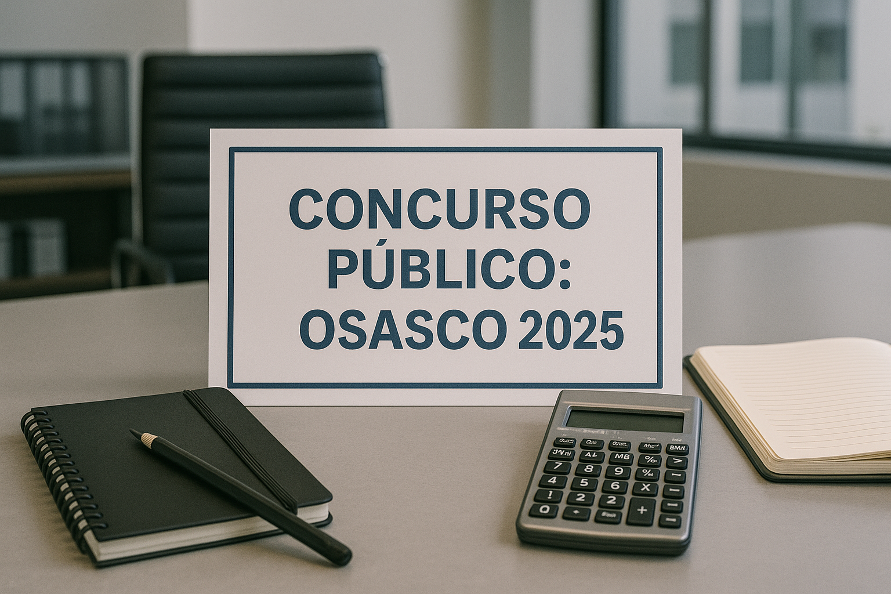

Concurso Prefeitura de Osasco 2025
Se você mora em Osasco ou região e está em busca de estabilidade profissional, essa pode ser a sua chance! A Prefeitura de Osasco acaba de abrir concurso público para o cargo de Agente Comunitário de Saúde. Com salários atrativos, atuação direta na comunidade e diversos benefícios, esse certame pode ser a porta de entrada para uma carreira sólida no setor público.

Vagas e Benefícios
- Total de vagas: 56 (53 ampla concorrência + 3 PcD)
- Cargo: Agente Comunitário de Saúde
- Salário: R$ 3.036,00
- Jornada: 40h semanais
- Regime: Celetista (CLT)
- Benefícios: Cesta básica mensal e Vale Cesta de Natal
Locais de Atuação
As vagas estão distribuídas entre as seguintes UBSs:
- Maria Girade Cury – 6 vagas
- Padre Guerrino Ricciotti – 1 vaga
- Emília Cosme Cerqueira – 3 vagas
- Lia Buarque Macedo Gasparine – 2 vagas
- Raimunda Cavalcante de Souza – 3 vagas
- Darcy Alves Evangelista (Robalinho) – 9 vagas
- Vasco da Rocha Leão – 8 vagas
- Dr. Adauto Ribeiro – 5 vagas
- Márcio Valdevino (Vila Menck) – 2 vagas
- Francisca Lima de Lira – 8 vagas
- José Sabino Ferreira – 8 vagas
- Otacílio Firmino Lopes – 1 vaga
Etapas do Concurso
- Prova objetiva (única fase): classificatória e eliminatória
- Duração: 3 horas
- Disciplinas:
- Língua Portuguesa – 10 questões
- Matemática – 10 questões
- Conhecimentos Específicos – 20 questões
Cronograma
- Inscrições: 28/05/2025 a 09/07/2025
- Taxa de inscrição: R$ 67,90
- Isenção: disponível para doadores de sangue residentes em Osasco
- Data da prova: a ser definida (acompanhe pelo site da VUNESP)
- Inscreva-se aqui: https://www.vunesp.com.br/PMOS2405
Requisitos
- Ensino médio completo
- Residência na área de atuação desde a publicação do edital
- Idade mínima de 18 anos
- Estar quite com obrigações eleitorais e militares
- Não possuir antecedentes criminais
- Aptidão física e mental
Mais Informações
- Organizadora: Fundação VUNESP
- Edital: Processo Seletivo nº 002/2025
- Site da Prefeitura: www.osasco.sp.gov.br